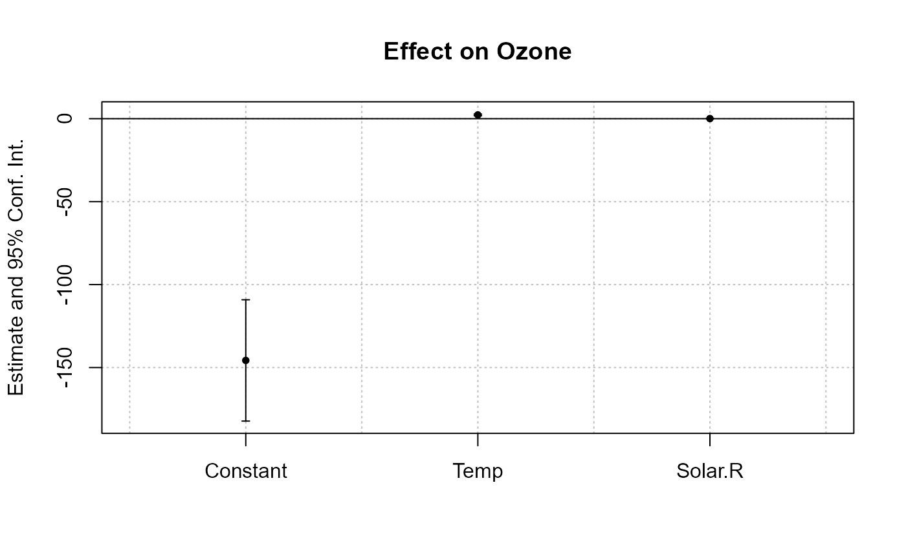
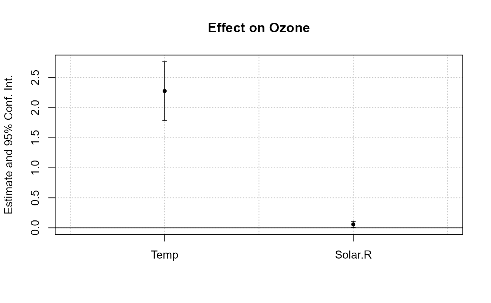
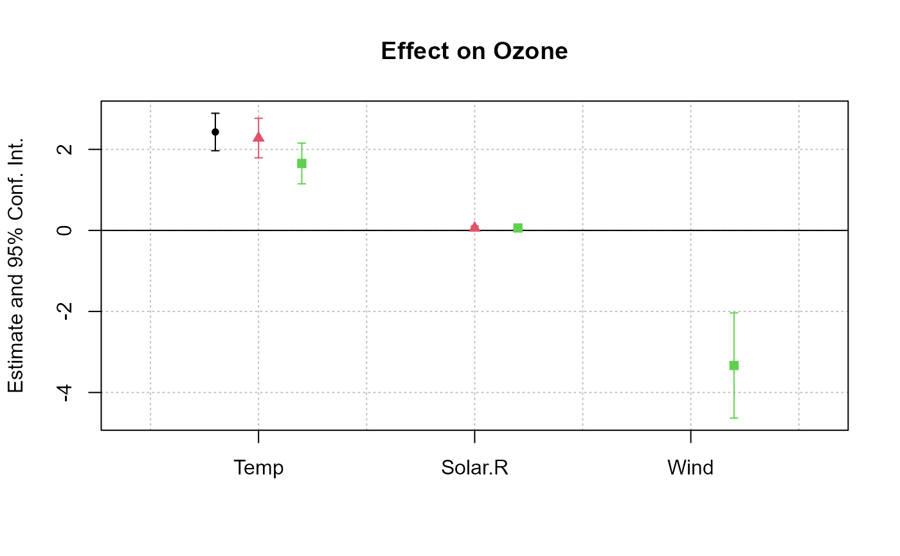
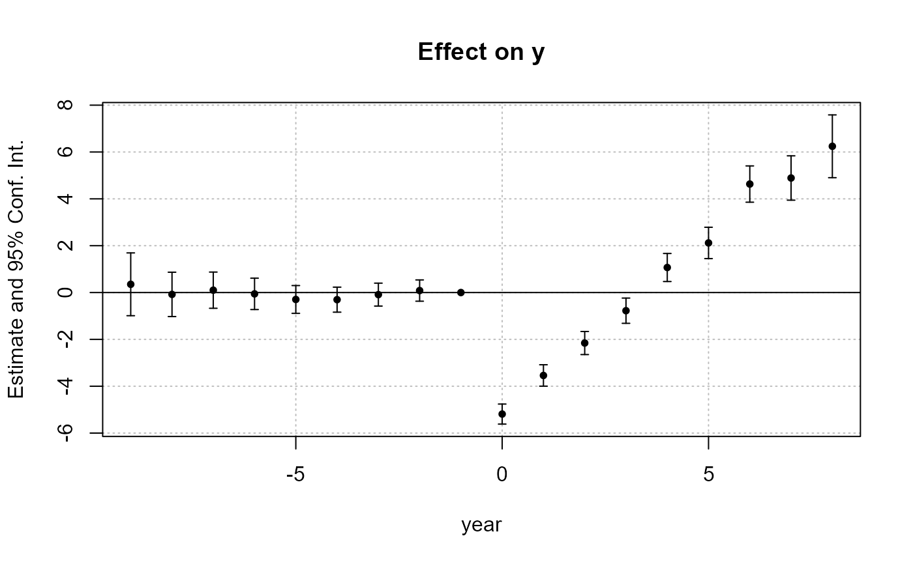

Plot method reporting the coefficient estimates and their confidence intervals.
This is a wrapper to the more complete functions coefplot and iplot.
Usage
# S3 method for class 'fixest'
plot(
x,
vcov = NULL,
add = FALSE,
horiz = FALSE,
do_iplot = NULL,
zero = TRUE,
zero.par = TRUE,
dict = NULL,
keep = NULL,
drop = NULL,
order = NULL,
ci.width = "1%",
ci_level = 0.95,
plot_prms = list(),
ylim = NULL,
xlim = NULL,
pch = c(20, 17, 15, 21, 24, 22),
col = 1:8,
cex = 1,
lty = 1,
lwd = 1,
pt.pch = pch,
pt.bg = NULL,
pt.cex = cex,
pt.col = col,
ci.col = col,
pt.lwd = lwd,
ci.lwd = lwd,
ci.lty = lty,
main = "Effect on __depvar__",
value.lab = "Estimate and __ci__ Conf. Int.",
ylab = NULL,
xlab = NULL,
sub = NULL,
...
)Arguments
- x
A
fixestestimation, for example fromfeols.- vcov
Versatile argument to specify the VCOV. In general, it is either a character scalar equal to a VCOV type, either a formula of the form: vcov_type ~ variables. The VCOV types implemented are: "iid", "hetero" (or "HC1"), "cluster", "twoway", "NW" (or "newey_west"), "DK" (or "driscoll_kraay"), and "conley". It also accepts object from vcov_cluster, vcov_NW, NW, vcov_DK, DK, vcov_conley and conley. It also accepts covariance matrices computed externally. Finally it accepts functions to compute the covariances. See the vcov documentation in the vignette.
You can pass several VCOVs (as above) if you nest them into a list. If the number of VCOVs equals the number of models, eahc VCOV is mapped to the appropriate model. If there is one model and several VCOVs, or if the first element of the list is equal to
"each"or"times", then the estimations will be replicated and the results for each estimation and each VCOV will be reported.- add
Default is
FALSE, if the intervals are to be added to an existing graph. Note that if it is the case, then the argumentxMUST be numeric.- horiz
A logical scalar, default is
FALSE. Whether to display the confidence intervals horizontally instead of vertically.- do_iplot
Logical, default is
FALSE. For internal use only. IfTRUE, theniplotis run instead ofcoefplot.- zero
Logical scalar, default is
TRUE. Whether the 0 should be displayed in the limits of the y-axis. Note that you can set how this zero line looks like with the argumentzero.par.- zero.par
A named list of graphical parameters or a logical scalar. This argument is a list containing the graphical parameters used to draw the zero-line. The default value is
list(col = "black", lwd = 1)(it's the same ifTRUE). Set it toFALSEto turn off the special emphasis of the zero line. You can add any graphical parameter that will be passed tographics::abline. Example:zero.par = list(col = "darkblue", lwd = 3).- dict
A named character vector or a logical scalar. It changes the original variable names to the ones contained in the
dictionary. E.g. to change the variables namedaandb3to (resp.) “$log(a)$” and to “$bonus^3$”, usedict=c(a="$log(a)$",b3="$bonus^3$"). By default, it is equal togetFixest_dict(), a default dictionary which can be set withsetFixest_dict. You can usedict = FALSEto disable it. By defaultdictmodifies the entries in the global dictionary, to disable this behavior, use "reset" as the first element (ex:dict=c("reset", mpg="Miles per gallon")).- keep
Character vector. This element is used to display only a subset of variables. This should be a vector of regular expressions (see
base::regexhelp for more info). Each variable satisfying any of the regular expressions will be kept. This argument is applied post aliasing (see argumentdict). Use the argumentkeep_rawfor the same effect before aliasing.Example: you have the variable
x1tox55and want to display onlyx1tox9, then you could usekeep = "x[[:digit:]]$". If the first character is an exclamation mark, the effect is reversed (e.g. keep = "!Constant" means: every variable that does not contain “Constant” is kept). See details.- drop
Character vector. This element is used if some variables are not to be displayed. This should be a vector of regular expressions (see
base::regexhelp for more info). Each variable satisfying any of the regular expressions will be discarded. This argument is applied post aliasing (see argumentdict). Use the argumentdrop_rawfor the same effect before aliasing.Example: you have the variable
x1tox55and want to display onlyx1tox9, then you could usedrop = "x[[:digit:]]{2}". If the first character is an exclamation mark, the effect is reversed (e.g. drop = "!Constant" means: every variable that does not contain “Constant” is dropped). See details.- order
Character vector. This element is used if the user wants the variables to be ordered in a certain way. This should be a vector of regular expressions (see
base::regexhelp for more info). The variables satisfying the first regular expression will be placed first, then the order follows the sequence of regular expressions. This argument is applied post aliasing (see argumentdict). Use the argumentorder_rawfor the same effect before aliasing.Example: you have the following variables:
month1tomonth6, thenx1tox5, thenyear1toyear6. If you want to display first the x's, then the years, then the months you could use:order = c("x", "year"). If the first character is an exclamation mark, the effect is reversed (e.g. order = "!Constant" means: every variable that does not contain “Constant” goes first). See details.- ci.width
The width of the extremities of the confidence intervals. Default is
0.1.- ci_level
Scalar between 0 and 1: the level of the CI. By default it is equal to 0.95.
- plot_prms
A named list. It may contain additionnal parameters to be passed to the plot.
- ylim
Numeric vector of length 2 which gives the limits of the plotting region for the y-axis. The default is
NULL, which means that it is automatically defined. Use the argumentylim.addto simply increase or decrese the default limits.- xlim
Numeric vector of length 2 which gives the limits of the plotting region for the x-axis. The default is
NULL, which means that it is automatically defined. Use the argumentxlim.addto simply increase or decrese the default limits.- pch
The patch of the coefficient estimates. Default is 1 (circle). This is an alias to tha argument
pt.pch.- col
The color of the points and the confidence intervals. Default is 1 ("black"). Note that you can set the colors separately for each of them with
pt.colandci.col.- cex
Numeric, default is 1. Expansion factor for the points
- lty
The line type of the confidence intervals. Default is 1. This is an alias to the argument
ci.lty.- lwd
General line with. Default is 1.
- pt.pch
The patch of the coefficient estimates. Default is 1 (circle).
- pt.bg
The background color of the point estimate (when the
pt.pchis in 21 to 25). Defaults to NULL.- pt.cex
The size of the coefficient estimates. Default is the other argument
cex.- pt.col
The color of the coefficient estimates. Default is equal to the argument
col.- ci.col
The color of the confidence intervals. Default is equal to the argument
col.- pt.lwd
The line width of the coefficient estimates. Default is equal to the other argument
lwd.- ci.lwd
The line width of the confidence intervals. Default is equal to the other argument
lwd.- ci.lty
The line type of the confidence intervals. Default is 1.
- main
The title of the plot. Default is
"Effect on __depvar__". You can use the special variable__depvar__to set the title (useful when you set the plot default withsetFixest_coefplot).- value.lab
The label to appear on the side of the coefficient values. If
horiz = FALSE, the label appears in the y-axis. Ifhoriz = TRUE, then it appears on the x-axis. The default is equal to"Estimate and __ci__ Conf. Int.", with__ci__a special variable giving the value of the confidence interval.- ylab
The label of the y-axis, default is
NULL. Note that ifhoriz = FALSE, it overrides the value of the argumentvalue.lab.- xlab
The label of the x-axis, default is
NULL. Note that ifhoriz = TRUE, it overrides the value of the argumentvalue.lab.- sub
A subtitle, default is
NULL.- ...
Other arguments to be passed to
coefplot.
Details
By default plot.fixest runs coefplot unless the estimation includes
the function sunab, in which case it uses iplot.
The switch to iplot can be made with the argument do_iplot = TRUE.
Arguments keep, drop and order
The arguments keep, drop and order use regular expressions. If you are not aware
of regular expressions, I urge you to learn it, since it is an extremely powerful way
to manipulate character strings (and it exists across most programming languages).
For example drop = "Wind" would drop any variable whose name contains "Wind". Note that
variables such as "Temp:Wind" or "StrongWind" do contain "Wind", so would be dropped.
To drop only the variable named "Wind", you need to use
drop = "^Wind$" (with "^" meaning beginning, resp. "$" meaning end,
of the string => this is the language of regular expressions).
Although you can combine several regular expressions in a single character
string using pipes, drop also accepts a vector of regular expressions.
You can use the special character "!" (exclamation mark) to reverse the effect
of the regular expression (this feature is specific to this function).
For example drop = "!Wind" would drop any variable that does not contain "Wind".
By default, the regular expressions are checked against the variables after
they have been renamed with the dictionary (argument dict).
You can use the *_raw versions of drop/keep/order to apply the regular
expressions on the original variable names.
Note that alternatively you can use the special character "%" (percentage) at the
beginning of drop/keep/order's regular expressions to refer to the original variable name.
For example, you have a variable named "Month6",
and use a dictionary dict = c(Month6="June").
Thus the variable will be displayed as "June".
If you want to delete that variable, you can use either drop="June", drop_raw="Month6",
or drop="%Month6".
The argument order takes in a vector of regular expressions, the order will follow the
elements of this vector. The vector gives a list of priorities,
on the left the elements with highest priority.
For example, order = c("Wind", "!Inter", "!Temp") would give highest priorities to
the variables containing "Wind" (which would then appear first),
second highest priority is the variables not containing "Inter", last,
with lowest priority, the variables not containing "Temp".
If you had the following variables: (Intercept), Temp:Wind, Wind, Temp you
would end up with the following order: Wind, Temp:Wind, Temp, (Intercept).
Examples
#
# Single estimation
#
est = feols(Ozone ~ Temp + Solar.R, airquality)
#> NOTE: 42 observations removed because of NA values (LHS: 37, RHS: 7).
plot(est)

# focus only on the variables
plot(est, drop = "Cons")

#
# Multiple estimations
#
est_mult = feols(Ozone ~ csw(Temp, Solar.R, Wind), airquality)
#> NOTE: 37 observations removed because of NA values (LHS: 37).
#> |-> this msg only concerns the variables common to all estimations
plot(est_mult, drop = "Const")

#
# DiD estimation: Sun & Abraham
#
data(base_stagg)
# The DiD estimation
res_sunab = feols(y ~ x1 + sunab(year_treated, year) | id + year, base_stagg)
plot(res_sunab)
